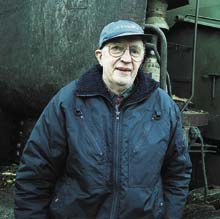

|

ELON ELIASSON har sin verkstad på
Hålegården.
Foto: Stig Gustavsson |
Elon konstruerar
efter eget huvud
HÄGRUNGA:
Biobränsle är inget nytt för Elon Eliasson. På Hålegården i Hägrunga har han sin verkstad – inte långt från platsen där hans fars smedja låg. Trots att han för en liten tid sedan fyllde 77 år har han inga planer på att pensionera sig.
– Det har blivit så att folk kommer hit och vill ha hjälp, säger han.
1959 konstruerade Elon Eliasson sin första flistugg. En tugg som var både betydligt mindre i såväl storlek som kapacitet i jämförelse med de senare han byggt. På gårdsplanen utanför verkstaden står en flistugg med en tank som rymmer tio kubikmeter flis.
– Den väger fyra ton och är försedd med en utblås som gör att man kan blåsa flisen dit man vill ha den, berättar Elon Eliasson och ger en demonstration.
– Fördelen, fortsätter han, är att man inte är låst till att tömma flisen i containrar eller lådor utan kan också blåsa upp den till vindsutrymmen eller andra lediga utrymmen.
Att fylla tanken med flis går snabbt förutsatt att tillgången till trä finns. Med manuell matning kan man fylla den tio kubikmeter stora tanken på en halvtimma. Med maskinell matning går det ännu snabbare.
Miljöpris
Elon Eliasson har inte bara byggt flistuggar. Han har också fortsatt kedjan ut och konstruerat och byggt ett 70-tal fliseldningsanläggningar, de flesta till lantbrukare. Detta var också en av anledningarna till att han fick 1999 års miljöpris i Vårgårda. Miljönämndens motivering är att Eliasson ’’genom teknisk begåvning och en stark känsla för resurssparande och återanvändning hjälpt jord- och skogsbrukare att på ett miljö- och kretsloppsanpassat sätt använda vedöverskottet från skogen.’’
I tillverkningen av anläggningarna återanvänder Elon Eliasson och Sven-Olof Johansson, som arbetat i verkstaden i snart 40 år, växellådor, drivaxlar, axelleder och liknande från bildemonteringar.
– Där det fungerar lika bra använder jag begagnade delar – men jag använder också nya delar, kommenterar han.
Någon tanke att han skulle bli aktuell som miljöpristagare hade han inte.
– Folk har kommit hit för att de behövt hjälp.
Lådvändare
Förutom flistuggarna och fliseldningsanläggningarna har han också konstruerat och sålt ett drygt hundratal lådvändare till många olika länder i Europa och till Syrien. Konstruktioner som tömmer två ton tunga lådor.
– Det började med att de på Vårgårda Kvarn fick reda på att jag höll på med lite grejor här, berättar Elon Eliasson. Jag hjälpte dem med en lådvändare och sedan följde fler beställningar från bland andra Svalöf och Weibull. Ett tag hade jag så många beställningar på lådvändare att det nästan inte gick att komma fram på gårdsplanen, berättar Elon och ler vid minnet.
Någon marknadsföring värd namnet har Elon Eliasson aldrig använt sig av – ändå har kunderna inte saknats.
– Folk kommer hit ändå och beställer. Att hitta kunder har inte varit något problem och flistuggarna som jag har körs runt i halva Västergötland.
Vilken av alla konstruktioner han är mest stolt över vet han inte.
– Njae, stolt. Jag vet inte om jag är stolt över någon av dem. Men visst är det roligt att ha byggt dem och att de fungerar.
Trots att Elon Eliasson tillsammans med Sven-Olof Johansson byggt ett 70-tal fliseldningsanläggningar finns det inte två som är lika varandra.
– Nej, det tror jag knappast, säger Eliasson. Vi skräddarsyr dem efter kundens behov och utrymme. Den första vi byggde hade vi hjälp av en konsult med brännaren. Men när vi sett hur han gjorde och hur det fungerade har vi byggt efter eget huvud.
Slipmaskinen i utrymmet intill verkstaden är en annan konstruktion som Elon Eliasson gjort efter eget huvud.
– Den kan slipa upp till tio knivar åt gången.
Något som kan behövas eftersom vassa knivar är en förutsättning för att flistuggen ska fungera som det är tänkt.
Vuxit upp med teknik
Intresset för det mekaniska och tekniska fick Elon med sig från sin fars smedja. Han var också den förste i bygden att köpa egen skördetröska 1951.
– Det fanns säkert de som undrade om man var riktigt klok. Men skördetröskan innebar en revolution och på höstarna fick jag åka runt och hjälpa folk att tröska. Jag var till och med ute på Sunnerö i Mjörn – men det tog nästan en hel dag att med pråm ta över traktorn och tröskan från Lövekulle, minns Elon.
Några planer på att dra sig tillbaka till ett vanligt pensionärsliv har han inte. 77 år fyllda har han fortfarande sin glädje i att arbeta med tekniska lösningar. Och kunder saknar han heller inte. Den senaste i raden av miljöpristagare i Vårgårda.
STIG GUSTAVSSON
|